확률은 한 사건이 일어날 가능성을 0에서 1사이의 값으로 수치화 한 것이다. 여러 가지 상황에
대한 확률을 계산하여 의사 결정이나 미래 예측에 많이 이용한다.
확률의 계산은 순열 조합이 이용되고 덧셈법칙과 곱셈법칙이 이용된다.
이산형 확률변수에는 이항분포, 포아송분포, 기하분포, 초기하분포 등이 있다.
연속형 확률변수에는 정규분포, 지수분포 등이 있다.
5.1 확률의 정의
우리 주변에는 동전을 던진다든지 제품을 검사한다든지 유사한 일이 반복되는 경우가 많다.
이러한 일들의 가능한 결과는 '겉면' 또는 '뒷면'이든지 '우량품' 또는 '불량품'이
되는 것은 알지만 무슨 결과나 될지는 모른다. 이와 같이 비슷한 일이 반복되고 모든 가능한
결과들은 알지만 한 결과가 우연에 의하여 결정되는 실험을 통계적 실험이라고 한다.
한 통계적 실험에서 모든 가능한 사건의 집합을 표본공간(sample space)이라 하고 이 표본공간의 한 부분집합을
사건(event)이란 한다. 표본공간의 원소수가 유한개 또는 셀수 있을 때 이산형 표본공간이라 하고,
원소수가 무한개일 때 연속형 표본공간이라 한다.
확률(probability)이란 '한 사건이 일어날 가능성을 0 과 1 사이의 실수로 표시' 하는 것인데, 한 사건이
발생할 가능성이 높으면 확률은 1 에 가까운 수로 표시하고, 반대로 발생할 가능성이 적으면 확률을 0 에 가까운 수로 표시한다.
어느 사건이 반드시 발생하면 확률은 1 로 정하고, 전혀 발생하지 않으면 확률은 0 으로 정한다. 구체적으로 '어느 사건의 확률을
0과 1사이의 어떤 값으로 정하느냐' 하는 방법에는 여러 가지가 있는데, 여기서는 확률의 고전적 정의와 상대도수를 이용한 정의 두 가지를 소개한다.
확률의 고전적 정의는 표본공간의 모든 원소가 일어날 가능성이 같다고 하고 사건 A가 발생할 확률(P(A)로 표시)은
이산형 표본공간의 경우에 다음과 같이 정의한다.
$$
P(A) = \frac{사건 \;A 에 \;속하는\; 원소의 \;개수}{표본공간의 \;전체\; 원소의 \;개수}
$$
연속형 표본공간의 경우에 확률 P(A)는 다음과 같이 정의한다.
$$
P(A) = \frac{사건 \;A 에 \;속하는\; 원소들의 \;측도}{표본공간의 \;전체\; 원소들의 \;측도}
$$
여기서 측도란 길이, 면적, 부피 등을 뜻한다.
확률의 고전적 정의는 많은 현실문제 확률계산에 큰 문제점이 없다. 그러나 고전적 정의에서 표본공간의 모든 원소가 발생할 가능성이 같다는 가정은 성립이 안되는 경우가 있을 수 있다. 예를 들면, 공장에서 한 제품을 생산할 때 '우량품'과 '풀량품'으로 표시한다면 표본공간은 {우량품, 불퍙품}이다. 하지만 우량품이 나올 가능성과 불량품이 나올 가능성은 같지 않아 표본공간의 각 원소가 발생할 가능성이 같다는 가정은 맞지 않는다. 이러한 문제를 해결하기 위한 것이 확률의 상대도수적 정의이다.
확률의 상대도수적 정의는 사건 A가 발생할 확률(P(A)로 표시)을 같은 조건하에서 통계적 실험을 수없이 많이 반복시행하였을 때 사건 A가 발생하는 비율 즉, 상대도수이다.
🎲 예 5.1
『eStatU』 메뉴에서 '통계적 확률'을 선택하면 [그림 5.1]과 같은 시뮬레이션 창이 나타난다.
여기에서 동전을 던지는 횟수 n을 입력하고 [실행] 버튼을 누르면 동전의 겉이 나오는 확률이
동전을 많이 던졌을 때 1/2에 수렴하는 것을 관찰할 수 있다. 이를 대수의 법칙(law of large number)이라한다.
풀이
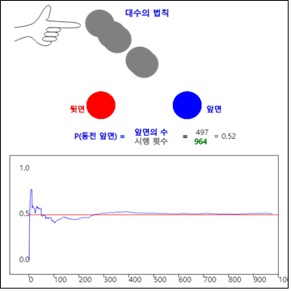
[그림 5.1] 『eStatU』대수의 법칙 시뮬레이션
5.2 확률의 계산
순열과 조합
n개의 사물 중 r개를 선택해 순서를 고려해 나열하는 방법의 수를 순열(permutation)이라 하고 다음과 같이 계산한다.
$$
_{n} P_{r} = n (n-1) (n-2) \cdots (n-r+1) = \frac {n!} {(n-r)!}
$$
그러므로 n개를 모두 나열하는 방법의 수는 다음과 같다.
$$
_{n} P_{n} = n(n-1)(n-2) \cdots 2 \cdot 1 = n!
$$
참고: 0! = 1
n개의 사물 중 r개를 순서를 고려치 않고 추출하는 방법의 수를 조합(combination)이라 하고 다음과 같이 계산한다.
$$
_{n} C_{r} = \frac { _{n} P_{r} } {r!} = \frac {n!} {r!(n-r)!}
$$
🎲 예 5.2
『eStatU』 메뉴에서 '순열 조합'을 선택하면 [그림 5.2]와 같은 창이 나타난다. 여기에서 n과 r을 입력하면 여러 종류의
순열과 조합이 계산된다. n이 10보다 작고 r이 2인 경우에 [실행] 버튼을 누르면 모든 경우의 수에 대한 그림을 보여준다.
풀이
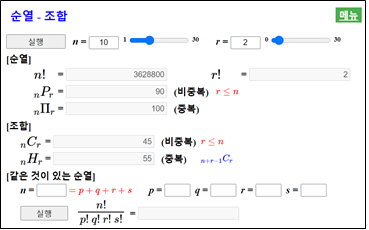
[그림 5.2] 순열과 조합의 계산
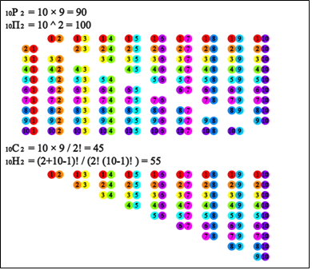
[그림 5.3] 10명중 2명을 뽑는 순열과 조합 경우의 수
확률의 덧셈법칙
표본공간 \(S\)의 두 사건 \(A\)와 \(B\)에 대하여 \(A\)또는 \(B\)가 일어나는 사건을
\(A \cup B\)로 나타내고, \(A\)와 \(B\)가 동시에 일어나는 사건을 \(A \cap B\)와 같이 나타낸다.
[그림 5.4] 사건 \(A \cup B\)와 사건 \(A \cap B\)
특히 사건 \(A\)와 \(B\)가 동시에 일어나지 않을 때, 즉 \(A \cap B\)= ø
일 때, 이 두 사건을 서로 배반사건이라고 한다.
[그림 5.5] 서로 배반인 사건 \(A\)와 사건 \(B\)
어떤 사건 \(A\)에 대하여 사건 \(A\)가 일어나지 않는 사건을 \(A\)의 여사건이라고 하고,
이 사건을 \(A^C\)로 나타낸다. \(A\)와 \(A^C\)는 동시에 일어날 수 없으므로
\(A \cap A^C\)= ø이고 사건 \(A\)와 \(A^C\)는 서로 배반사건이다.
[그림 5.6] 사건 \(A\)의 여사건 \(A^C\)
확률의 덧셈법칙은 다음과 같다..
$$
P(A ∪ B) = P(A) + P(B) - P(A ∩ B)
$$
만일 A ∩ B = ∅ 일 때. 즉 A와 B가 서로 배반사건이면 확률은 다음과 같다.
$$
P(A ∪ B) = P(A) + P(B)
$$
🎲 예 5.3
『eStatU』메뉴에서 '확률의 덧셈정리'를 선택하면 [그림 5.7]과 같은 창이 나타난다. 여기에서 P(A) = 0.6, p(B) = 0.4,
P(A ∩ B) = 0.2를 입력한 후 [실행]버튼을 클릭하면 확률의 덧셈정리에 대한 그래프를 관찰 할 수 있다. P(A), P(B),
P(A ∩ B)를 변화시키면서 덧셈 정리를 살펴볼 수 있다.
풀이
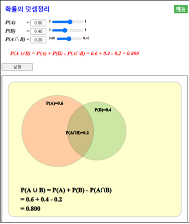
[그림 5.7] 확률의 덧셈정리
조건부 확률과 확률의 곱셈법칙
한 고등학교 학생 40명의 안경착용 여부를 조사하니 다음 표와 같다.
안경착용(\(B\))
안경착용 안함(\(N\))
합계
남학생(\(A\))
\(n(A \cap B) = 8\)
\(n(A \cap N) = 16\)
\(n(A) = 24\)
여학생(\(F\))
\(n(F \cap B) = 4\)
\(n(F \cap N) = 12\)
\(n(F) = 16\)
합계
\(n(B) = 12\)
\(n(N) = 28\)
\(n(S) = 40\)
남학생 중에서 한 명을 임의로 뽑았을 때 이 학생이 안경을 착용했을 확률은 기호로
\(P(B|A)\)로 표시하며 남학생인 사건 \(M\)을 표본공간으로 볼 수 있으므로
두 사건 \(A\)와 \(B\)에 대하여 사건 \(A\)가 일어나는 것이 사건 \(B\)가
일어날 확률에 영향을 주지 않은 때, 즉
\( P(B|A) = P(B)\)
일 때, 두 사건 \(A\)와 \(B\)는 서로 독립이라고 한다. 한편 두 사건 \(A\)와 \(B\)가
독립이 아닐 때, 두 사건 \(A\)와 \(B\)는 서로 종속이라고 한다.
두 사건 \(A\)와 \(B\)가 서로 독립이면 확률의 곱셈정리에 의하여
\( P(A \cap B) = P(A) × P(B|A) = P(A) × P(B) \)
가 성립한다.
🎲 예 5.4
『eStatU』 메뉴에서 '조건부확률'을 선택하면 [그림 5.8]과 같은 창이 나타난다. 여기에서 결합확률
\(P(A_1 \cap B_1\) 를 조정하면 조건부확률을 관찰할 수 있고 그 밑에 [그림 5.9]와같은
선그래프와 각각의 행에 대한 조건부확률의 막대그래프를 관찰할 수 있다.
풀이
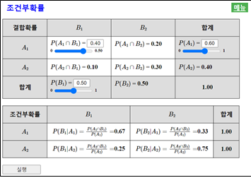
[그림 5.8] 조건부확률
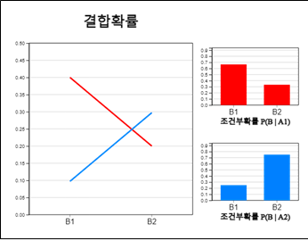
[그림 5.9] 결합확률에 대한 그래프와 조건부확률
5.3 이산형 확률변량
동전을 던졌을 때 표본공간의 여러 가지 사건에 대해 확률을 구할 수 있지만 그 중에서도 우리가 관심이
있는 것은 '앞면이 나오는 횟수'에 대한 사건들과 그 확률이다. \(X\)를 동전의 앞면이 나온 횟수라고 하면
\(X\)의 값으로 가능한 수는 0, 1, 2가된다.
즉 \(X\)는 표본공간 \(S\)의 각 원소에 다음과 같이 하나의 수를 대응한 것이다.
표본공간
\(X\) = 동전의 앞면이 나온 횟수
{TT}
0
{TH} {HT}
1
{HH
2
이와 같이 어떤 통계적 실험에서 표본공간의 각 원소에 단 하나의 실수를 대응시킨 관계를 확률변수
라고 한다. 확률변수는 대개 알파벳 대문자 \(X, Y, Z \) 등으로 표시하고, 확률변수의 값은
소문자 \(x, y, z \)등으로 표시한다. 확률변수가 가질 수 있는 값이 유한개이거나 자연수와
같이 셀 수 있을 때 그 확률변수를 이산확률변수라 하고, 임의의
실수 값을 가질 때, 그 확률변수를 연속확률변수라고 한다. 예를 들어 동전을 두 개
던져 나타나는 겉면의 수 \(X\)는 이산확률변수이고, 피자를 주문해서 집에 도착할 때까지 걸리는
시간을 \(Y\)라 하면 \(Y\)는 임의의 양의 실수 값을 가질 수 있으므로 연속확률변수가 된다.
확률변수 \(X\)를 동전을 두 번 던졌을 때 나오는 앞면이 나온 횟수라고 할 때 각 값이 나오는 확률은 다음 표와 같이 정리할 수 있다.
표본공간
\(X\) = 동전의 앞면이 나온 횟수
\(P(X=x)\)
{TT}
\(x = 0\)
\(\frac{1}{4}\)
{TH} {HT}
\(x = 1\)
\(\frac{2}{4}\)
{HH}
\(x = 2\)
\(\frac{1}{4}\)
이 표와 같이 이산확률변수 \(X\)가 어느 한 값 \(x\)를 가질 확률 \(P(X=x)\)을 모두
정리한 것을 확률분포라고 한다. 위의 확률분포는 [그림 5.10]과 같이 그래프로 나타낼 수 있다.
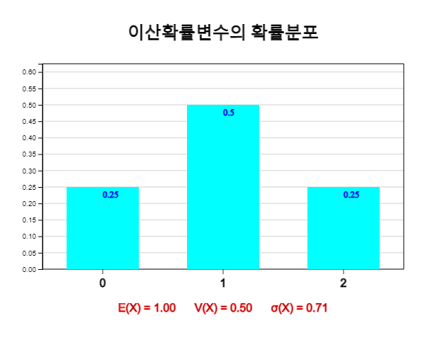
[그림 5.10] 이산확률변수의 확률분포
일반적으로 이산확률변수 \(X\)가 가질 수 있는 값이 \(x_1 , x_2 , \cdots , x_n\)이고
각각의 값을 가질 확률이 \(p_1 , p_2 , \cdots , p_n\)일 때 이를 확률분포함수라 부르고 \(f(x)\)로 표시한다.
\(X\)
\(x_1\)
\(x_2\)
\(\cdots\)
\(x_n\)
합계
\(P(X=x_i )\)
\(p_1\)
\(p_2\)
\(\cdots\)
\(p_n\)
1
이 확률변수의 평균 또는 기댓값 \(E(X) = \mu \), 분산 \(V(X) = \sigma^2 \), 표준편차
\(\sigma(X)\)는 다음과 같이 구한다.
확률변수 \(X\)에 대한 확률분포함수의 평균 \(E(X)\)는 모든 가능한 값 \(x_1 , x_2 , ... , x_n \)에
대하여 확률 \(p_1 , p_2 , ... , p_n \)을 가중값으로 한 무게중심으로 이해 할 수 있다.
그리고 분산 \(V(X)\)는 이 평균으로부터의 제곱거리에 대한 평균, 표준편차 \(\sigma(X)\)는
가능한 값들의 평균으로부터의 거리를 의미한다.
일반적으로 확률변수 \(X\)의 평균, 분산, 표준편차가 각각
\(E(X) = \mu\), \(V(X) = \sigma^2\), \(\sigma(X) = \sigma\)일 때 \(Y = aX + b\)의
평균, 분산, 표준편차는 다음과 같다.
이와 같은 \(Y = aX + b\)의 평균, 분산, 표준편차는 \(X\)가 이산확률변수이거나
연속확률변수이거나 상관없이 성립한다.
🎲 예 5.5
『eStatU』 메뉴에서 '이산확률변량의 분포'를 선택하면 [그림 5.11]과 같은 자료입력 창이 나타난다. 여기에 자료를 그림과 같이 입력하고 [실행]버튼을 누르면 [그림 5.11]과 같은 확률분포 그래프가 나타난다.
확률분포의 평균과 분산 및 표준편차도 계산하여 준다.
풀이
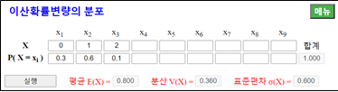
[그림 5.11] 이산확률변량의 분포 자료입력
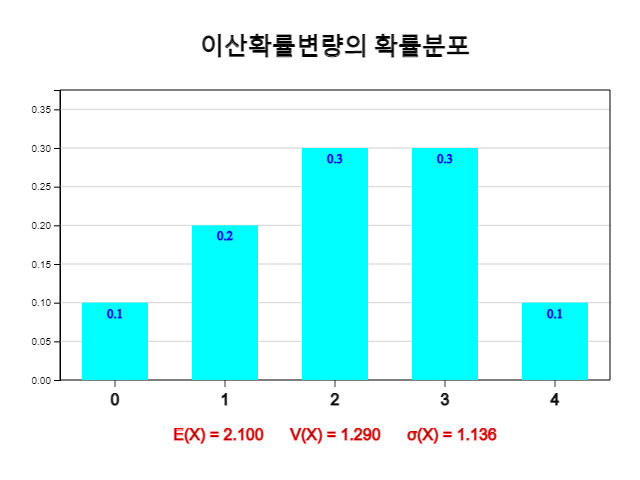
[그림 5.12] 『eStatU』를 이용한 이산확률분포 그래프
이산확률분포 중에서 현실에서 많이 이용되는 것이 이항분포이고, 그밖에 포아송분포, 기하분포, 초기하분포 등이 있다.
이항분포
'성공'인 사건의 확률이 \(p\)인 베르누이 실험을 \(n\)번 독립적으로 반복 시행하였을 때
확률변수 \(X\)를 '성공의 회수(X)'라 하면 \(X\)가 \(x\)일 확률분포는 다음과 같은 이항분포
\(B(n,p)\)이다.
$$
f(x) = {}_n C_x p^x (1-p)^{n-x} \quad (단, \;\; x=0,1,2, ... , n)
$$
이항분포의 평균은 E(X) = \(np\)이고, 분산은 V(X) = \(np(1-p)\)이다.
🎲 예 5.6
과학관 등에 가면 공을 위에서 떨어뜨려 한 곳에 부딪치면 1/2 확률로 좌측(0점) 또는 우측(1점)으로 떨어지게 하는 기구가 있다. 떨어진 공은 다시 1/2 확률로 좌측 우측으로 떨어진다. 100개의 공을 떨어뜨렸을 때 전체 점수의 합계를 조사해본다.
『eStatU』 메뉴에서 '이항분포실험'을 선택하면 [그림 5.13]과 같은 창이 나타난다. 여기에 몇 번 공이 부딪히게 하는 지 n과 우측으로 갈 확률 p를 입력하고 [실행]버튼을 누르면 공이 떨어지며 점수 합계가 이항분포가 되는 실험을 할 수 있다.
풀이
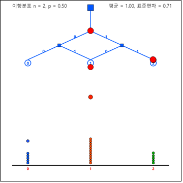
[그림 5.13]『eStatU』의 이항분표 실험 시뮬레이션
🎲 예 5.7
프로야구팀 '호랑이'가 올해 시즌에 '곰'팀과 앞으로 더 치러야 할 게임 수는 네 게임이다. 호랑이팀이 매 게임 승리할 확률이 60%이다. 확률변수 X = '호랑이가 승리하는 게임수' 는 이항분포이다. 『eStatU』을 이용하여 이 확률분포를 구해 보자.
『eStatU』의 주메뉴에서 '이항분포'를 선택하고 n = 4, p = 0.6을 입력하고 [실행] 버튼을 누르면 [그림 5.14]와 같은 이항분포 그래프가 나타난다.
풀이
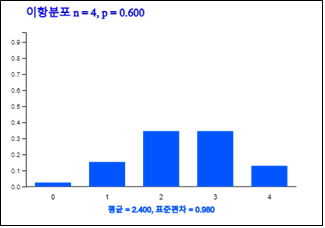
[그림 5.14] n = 4, p = 0.6 이항분포 그래프
그래프 밑에는 n과 p의 슬라이드바와 확률계산 박스가 있어 원하는 값을 넣고 [Enter] 키를 누르면 값이 계산된다.
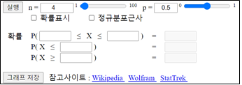
[그림 5.15] n과 p의 슬라이드바와 확률계산
그래프 오른쪽에는 이항분포에 대한 확률밀도함수 표가 나타난다. 이 표에는 P(X = x) 이외에도 누적확률 P(X ≤ x)와
P(X ≥ x)를 같이 보여주어 여러 가지 확률계산을 쉽게 할 수 있다. 새로운 n과 p를 선택하고 [실행] 버튼을 누르면
이 값에 대한 이항분포표가 밑에 추가된다.
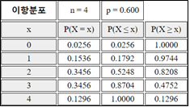
[그림 5.16] 이항분포표
포아송분포
단위시간 또는 단위면적당 발생하는 한 사건('전화가 걸려옴', '교통사고가 발생', '기계가 고장')의 수를 나타내는 확률변량을
포아송 확률변량(Poisson random variable)이라고 하며, 그 분포를 포아송분포(Poisson distribution) 라고 한다.
$$
f(x) = \frac { e^{-\lambda} \lambda^x } { x! } , \qquad x = 0, 1, 2, ...
$$
여기서 \(\lambda\)는 사건의 평균 발생횟수이다.
포아송분포의 평균은 E(X) = \(\lambda\), 분산은 V(X) = \(\lambda\) 이다.
🎲 예 5.8
우리나라 남부지역에 한 해 동안 태풍이 지나가는 수는 평균 \(\lambda\)=2.5 회인 포아송분포를 한다고 하자. 『eStatU』를 이용하여 포아송분포를 구해 보자.
풀이
『eStatU』의 주메뉴에서 '포아송분포'를 선택하고 \(\lambda\) = 2.5를 입력한 후 [실행] 버튼을 누르면 [그림 5.17]과 같은 포아송분포가 나타나고 그 오른쪽에 포아송분포표가 나타난다. 이 표에는 P(X = x) 이외에도 누적확률 P(X ≤ x)와 P(X ≥ x)를 같이 보여주어 여러 가지 확률계산을 쉽게 할 수 있다.
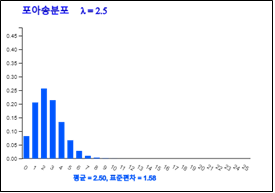
[그림 5.17] \(\lambda\) = 2.5인 포아송분포
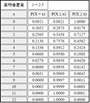
[그림 5.18] 포아송분포표
그래프 밑에는 \(\lambda\) 슬라이드바와 확률계산 박스가 있어 원하는 값을 넣고 [Enter] 키를 누르면 값이 계산된다.
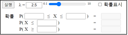
[그림 5.19] \(\lambda\) 슬라이드바와 확률계산 박스
기하분포
베르누이 시행에서 '성공'의 확률이 \(p\) 이고 '성공'이 나타날 때까지의 베르누이 시행회수를 확률변량 X라 할 때 이 분포를
기하분포(Geometric Distribution)라 한다. .
$$
f(x) = (1-p)^{x-1} p, \qquad x=1,2, ...
$$
한 공장에서 생산된 제품에서 불량률은 약 5%라고 한다. 불량품의 원인을 조사하기 위해 불량품을 찾을 때까지 계속 제품을 검사할 때 검사회수는 기하분포를 따른다. 『eStatU』를 이용하여 기하분포를 구해 보자.
풀이
『eStatU』의 주메뉴에서 '기하분포'를 선택하고 p = 0.05를 입력한 후 [실행] 버튼을 누르면 [그림 5.20]과 같은 기하분포가 나타나고 그 오른쪽에 기하분포표가 나타난다. 이 표에는 P(X = x) 이외에도 누적확률 P(X ≤ x)와 P(X ≥ x)를 같이 보여주어 여러 가지 확률계산을 쉽게 할 수 있다.
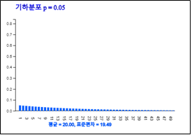
『eStatU』의 p = 0.05인 기하분포
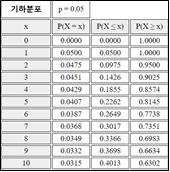
[그림 5.21] 기하분포표
그래프 밑에는 p 슬라이드바와 확률계산 박스가 있어 원하는 값을 넣고 [Enter] 키를 누르면 값이 계산된다.
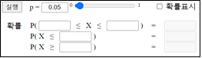
[그림 5.19] p 슬라이드바와 확률계산 박스
초기하분포
집단의 크기가 유한개인 N개이고 집단(속성이 '성공'인 것이 D개, 아닌 것이 N-D개)에서 n개를 추출할 때
'성공의 회수(X)' 를 초기하 확률변량(hypergeometric random variable)이라 하고,
그 분포를 초기하분포(hypergeometric distribution)라 한다.
$$
\frac { {}_{D} C_x \times {}_{N-D} C_{n-x} } { {}_{N} C_{n} }
$$
\(p = \frac{D}{N}\)라 하면 초기하분포의 평균은 E(X) = \(np\), 분산은 V(X) =\( np(1-p) \frac{N-n}{N-1}\) 이다.
🎲 예 5.10
20개의 담배제품(우량품 15개, 불량품 5개)이 들어 있는 상자에서 3개를 추출하였을 때 이중 불량품의 개수는 초기하분포를 따른다. 『eStatU』를 이용하여 초기하분포를 구해 보자.
풀이
『eStatU』의 주메뉴에서 '초기하분포'을 선택하고 N = 20, D = 5, n = 3을 선택하고 '실행' 버튼을 클릭하면
[그림 5.23]과 같은 초기하분포가 나타나고 그 오른쪽에 초기하분포표가 나타난다. 이 표에는 P(X = x) 이외에도
누적확률 P(X ≤ x)와 P(X ≥ x)를 같이 보여주어 여러 가지 확률계산을 쉽게 할 수 있다.
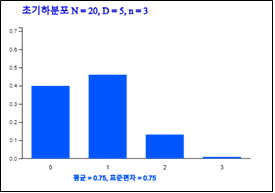
[그림 5.23] N = 20, D = 5, n = 3 인 초기하분포
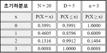
[그림 5.24] 초기하분포표
그래프 밑에는 n 슬라이드바와 확률계산 박스가 있어 원하는 값을 넣고 [Enter] 키를 누르면 값이 계산된다.
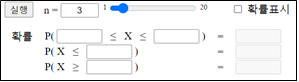
[그림 5.25] n 슬라이드바와 확률계산 박스
5.4 연속형 확률변량
정규분포
한 피자가게에 피자를 주문하여 집까지 배달되는 시간을 임의로 많이 조사하여 히스토그램을 그린 결과가 다음과 같다.
우리 주변의 연속확률변수의 자료 중에서는 위의 히스토그램과 같이 종을 엎어 놓은 모양으로
평균 근처에 자료가 많이 몰려있고, 평균에서 멀어질수록 자료 수가 적으며, 평균을 중심으로
대칭형인 형태가 많이 관찰된다. 이러한 형태의 모든 자료들에 대한 확률을 쉽게 구하기 위해
많은 수학자들이 이 분포 형태를 묘사할 수 있는 함수를 찾았다. 이 수학적 함수를 이용하면
굳이 도수분포표나 히스토그램을 그리지 않고 원하는 확률을 근사적으로 구할 수 있다.
드 므와브르(Abraham de Moivre(1667-1754))에 의해 이와 같은 함수를 처음 발견되었고,
그 후 독일의 수학자 가우스(Carl Friedrich Gauss(1777-1855))에 의해 물리학과 천문학 등에
폭 넓게 응용되었다. 이 함수를 정규분포함수 또는 가우스분포함수라고
부르는데 함수식과 그래프는 다음과 같다.
이 함수에서 \(\mu\)는 상수, \(\sigma\)는 양의 상수, \(e\)는 \(2.71828\cdots\)인
무리수이다. 이 확률밀도의 평균과 표준편차는 각각 \(\mu\)와 \(\sigma\)이다.
확률변수 \(X\)가 평균 \(\mu\), 표준편차 \(\sigma\), 즉 분산이 \(\sigma^2\)인
정규분포를 따를 때 기호로 \(N(\mu, \sigma^2 )\)로 표시하기도 한다.
🎲 예 5.11
『eStatU』를 이용하여 여러 가지 정규분포 함수의 모양을 비교해 보자.
풀이
『eStatU』의 주메뉴에서 '정규분포 비교'를 선택하면 [그림 5.26]과 같은 화면이 나타난다. 세 정규분포
\(N(-2, 0.5^2 )\), \(N(0, 1)\, \(N(2, 3^2 )\를 비교하기 위해 그림과 같이 평균 및 표준편차를 입력하고
[실행] 버튼을 누르면 세 정규분포의 그림이 나타난다. 평균을 중심으로 모두 대칭이고, 분산이 커지면 정규분포는 평평해지고,
분산이 작아지면 뾰족해 지는 것을 관찰할 수 있다. 이는 전체 넓이가 1이 되어야하기 때문이다. 슬라이드바를 이용하여 평균과
표준편차를 변화시키며 정균분포의 모양을 관찰할 수 있다.
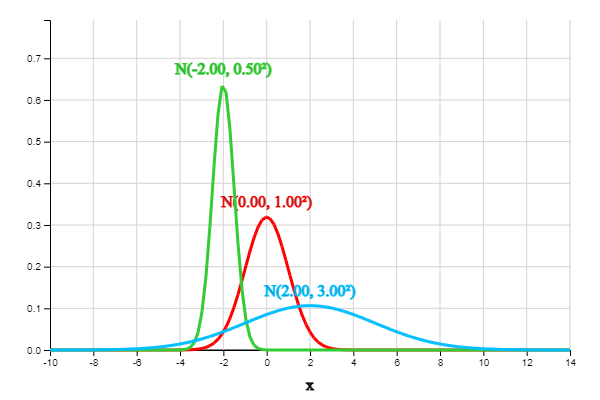
[그림 3.24] 『eStatU』의 정규분포 비교
[그림 3.25] 세 정규분포 \(N(-3, 1)\), \(N(0, 1)\, \(N(3, 1 )\) 비교
[그림 3.26] 세 정규분포 \(N(0, 0.5^2 )\), \(N(0, 1)\, \(N(0, 3^2 )\) 비교
정규분포의 특징을 요약하면 다음과 같다.
1) 직선 \(x = \mu\)에 대하여 대칭인 종모양의 곡선이고 점근선은 \(x\)축이다.
따라서 평균의 왼쪽과 오른쪽의 확률은 각각 0.5이다.
2) \(x = \mu\)일 때, 최댓값은 \(\frac{1}{\sqrt{2 \pi} \sigma}\)이다.
3) \(\sigma\)의 값이 일정할 때, \(\mu\)의 값이 변하면 대칭축의 위치만 바뀌고 곡선의 모양은 같다.
4) \(\mu\)의 값이 일정할 때, \(\sigma\)의 값이 커지면 곡선은 낮아지고 넓게 퍼지고,
\(\sigma\)의 값이 작어지면 곡선은 높아지고 뾰족해진다.
5) \(y = f(x)\) 그래프와 \(x\)축 사이의 넓이는 1이다.
정규분포에서의 확률계산
🎲 예 5.12
『eStatU』를 이용하여 정규분포의 확률계산을 하여 보자.
풀이
『eStatU』의 주메뉴에서 '정규분포'를 선택하면 [그림 5.29]와 같은 화면이 나타난다. 여기에서 어떠한 정규분포 확률변수의 구간
\([a, b]\)에 대한 \(P(a ≤ X ≤ b) \) 확률계산과, 주어진 확률 \(p\)에 대한 백분위수(즉, \( P( X ≤ x ) = p \)가
되는 백분위수 \(x\)를 쉽게 계산할 수 있다. 구간의 확률은 \(\mu - 4\sigma\)에서 \(\mu + 4\sigma\)까지 계산할 수 있다. X가 보다 적든지 보다 큰 경우에 확률은 0.0000이 된다. [그림 5.30]은 표준정규분포의 백분위수표이다.
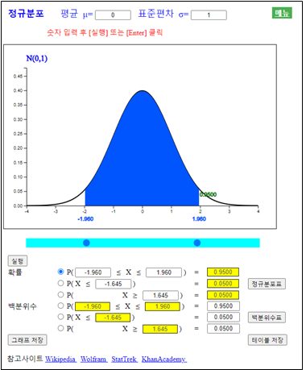
[그림 5.29] 『eStatU』에서 정규분포 확률계산
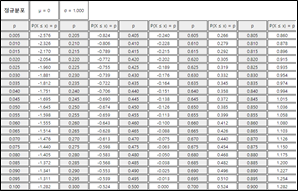
[그림 5.30] 『eStatU』의 표준정규분포 백분위수표
지수분포
단위 시간당 발생하는 평균 사건수를 라 했을 때 확률변량 X를 발생하는 사건들 사이의 시간이라고 하면 X는 다음과 같은 지수분포
(Exponential Distribution) 모형을 적용할 수 있다. \(\lambda\)는 지수분포의 모수이고 지수분포함수 식은 다음과 같다.
$$
f(x) = \lambda exp( - \lambda x ) , \qquad x > 0
$$
지수분포의 평균은 E(X) = \(\frac {1}{\lambda}\), 분산은 V(X) = \(\frac {1}{\lambda ^2}\) 이다.
🎲 예 5.13
한 제품의 평균 수명은 10시간이며 지수분포를 따른다. 『eStatU』를 이용하여 이 지수분포의 확률을 구해 보자.
풀이
『eStatU』의 주메뉴에서 '지수분포'를 선택하면 [그림 5.31]과 같은 화면이 나타난다. 여기에서 \(lambda\)=10을 입력하고
[실행] 버튼을 누르면 지수분포 확률변수의 구간
\([a, b]\)에 대한 \(P(a ≤ X ≤ b) \) 확률계산과, 주어진 확률 \(p\)에 대한 백분위수(즉, \( P( X ≤ x ) = p \)가
되는 백분위수 \(x\)를 쉽게 계산할 수 있다. 그래프 밑의 '백분위수표' 버튼을 누르면 지수분포의 백분위수표가 나타난다.
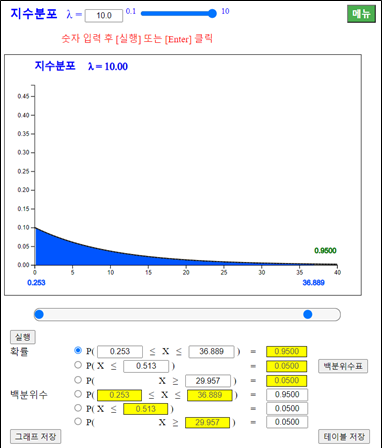
[그림 5.31] 『eStatU』의 지수분포 확률 계산
연습문제
*** 답을 선택한 후 [제출] 버튼을 누르세요
5.1 두 사건 A와 B가 서로 배반일 때, 사건 A∪B의 확률 P(A∪B)와 같은 것은?
5.2 사건 A가 일어날 확률을 P(A)로 나타낸다. 두 사건 A, B에 관하여 다음 중 틀린 것은?
5.3 P(A)=0.4, P(B)=0.2, P(A｜B)=0.6일 때 P(A∩B)의 값은?
5.4 만일 A⊂B이면 조건부 확률 P(A｜B)는 P(A)보다 어떠한가?
5.5 주사위를 2개(또는 한 개의 주사위를 2회) 던질 때에 2의 눈과 5의 눈이 동시에 나타날 확률은?
5.6 한 개의 주사위를 3번 던져서 첫번째가 5, 두번째가 3, 세번째가 짝수의 눈이 나올 확률은 얼마인가?
5.7 우량품인 전구 5개와 불량품인 전구 2개가 들어 있는 통에서 3개를 하나씩 임의로 추출(한번 추출한 것은 다시 넣지 않는 비복원 추출)했을 때 이 중에서 1개의 전구가 불량품일 확률을 구하면?
5.8 P(A)=0.4, P(B)=0.2, P(A｜B)=0.6일 때, 의 값은?
5.9 P(A)=0.4, P(B)=0.2, P(A｜B)=0.6일 때, P(B｜A)의 값은?
5.10 두 개의 주사위를 던져 나오는 결과를 (\(x_1 , x_2 \))로 표시한다.
\(B = \{ (x_{1} ,x_{2} ) | x_{1} > x_{2} \} \)라고 하면, P(B)의 값은?
5.11 두 개의 주사위를 던져서 나오는 결과를 (\(x_1 , x_2 \) )로 표시한다.
\(A = \{ (x_{1} ,x_{2} ) | x_{1} + x_{2} =10 \} \), \(B = \{ (x _{1} ,x _{2} ) | x _{1} > x _{2} \} \)
라고 하면, P(B｜A)의 값은?
5.12 한 확률변량의 수치들에 각각 5배를 하였을 때 그 표준편차는?
5.13 어떤 학급에서 시험을 본 결과 평균이 24점, 표준편차가 3점이었다.
성적이 나빠 학급의 모든 학생에게 성적을 2배하여 10점을 더하여 주었다. 이때, 이 학급의 평균과 표준편차를 구하면?
5.14 X의 평균이 20일 때, Y=2X+3의 관계가 있는 Y의 평균을 구하면?
5.15 X의 분산이 2일 때, Y=2X＋1의 관계가 있는 Y의 분산은 얼마인가?
5.16 다음 중 틀린 것은?
5.17 기대값 E(X)=5, \(\small E(X^2)\)=25일 때, 분산 V(X)는 얼마인가?
5.18 다음에서 확률분포함수로 적당한 것은?
5.19 다음에서 확률분포함수의 성질이 아닌 것은?
5.20 변량 X가 0, 1, 2, 3의 값을 취하고, 확률함수 \( f(x) = \frac{x}{6}\)일 때, X의 평균값은?
5.21 연속확률변량 X의 모든 값에서 정의된 확률밀도함수 f(x)에 대해서 다음 중 틀린 것은?
5.22 확률변량 X의 확률분포가 다음과 같을 때 평균 E(X)와 표준편차 σ(X)의 값은?
\(x\)
0
1
2
합계
\(\small P(X=x)\)
\(\frac{3}{10}\)
\(\frac{6}{10}\)
\(\frac{1}{10}\)
1
5.23 1개의 주사위를 던져 나오는 눈은 1부터 6까지이다. 나오는 눈을 확률변량 X라고 할 때, X의 기대값 E(X)를 구하면 얼마인가?
5.24 주사위를 한 개 던져 나온 수의 제곱의 점수를 얻을 때 점수의 기대값은?
5.25 확률변량 X가 세 값 0, 1, 2에서 각각 1/2, 1/3, 1/6 을 취한다고 가정하면 구간 1 ≤ x < 2에서의 누적분포함수 F(x)의 값은 얼마인가?